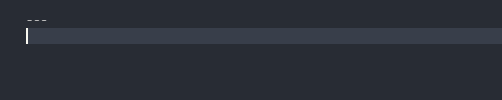

Puppet Helper Functions
Puppet Apply Powershell Function
With 8.56, the command line to run Puppet with the DPK got longer. You have to pass in the --confdir parameter and path every time you run Puppet.
To simplify the command, a simple Powershell function can be used to run the DPK. Add this function to your C:\Windows\System32\WindowsPowerShell\v1.0\Microsoft.PowerShell_profile.ps1 file.
function pa {
$starttime = $(get-date)
set-location c:\psft\dpk\puppet
stop-service Psft*
puppet apply .\manifests\production\site.pp --confdir=c:\psft\dpk\puppet --strict off -d
$elapsedtime = $(get-date) - $starttime
Write-Output "Run Time: ${elapsedtime}"
}
Hiera Lookup Snippet
When doing a lot of Hiera lookups in your YAML files, it can be tedious to type out the %{hiera('')} string everytime. Here is a handy VSCode “snippet” for making this easier. If the YAML Language extension is installed (redhat.vscode-yaml), lookup will be able to autocomplete into the snippet, using tab to get inside, and then out of the hiera lookup. Add a new user snippet for the YAML file type with the following code:
"lookup": {
"prefix": "lookup",
"body": ["\"%{hiera('$1')}\"$0"],
"description": "Hiera Lookup Snippet"
}
